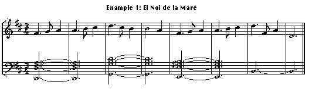

Machine Learning for Music
|
|
Machine Learning for Music |
We are currently focused on understanding the expressive resources used by guitar players. We are interested in analyzing and modeling the use of these expressive resources considering the musical structure of a piece, its musical genre, and the personal traits of the players. Visit our website GuitarLab for a more detailed explanation of our project.
We analyzed the expressivity differences of professional guitar performers. We considered event-shift timing variations and show that sequences of note onset deviations are robust and reliable predictors of the musical piece being played, irrespective of the performer. In fact, our results suggest that only a few consecutive onset deviations are already enough to identify a musical composition with statistically significant accuracy. This research has been published in PLOS ONE journal. See a summary of the results achieved in our experiments.
Popular music is a key cultural expression that has captured listeners' attention for ages. Many of the structural regularities underlying musical discourse are yet to be discovered and, accordingly, their historical evolution remains formally unknown. In the paper Measuring the Evolution of Contemporary Western Popular Music, we unveil a number of patterns and metrics characterizing the generic usage of primary musical facets such as pitch, timbre, and loudness in contemporary western popular music. Many of these patterns and metrics have been consistently stable for a period of more than fifty years. However, we prove important changes or trends related to the restriction of pitch transitions, the homogenization of the timbral palette, and the growing loudness levels. This suggests that our perception of the new would be rooted on these changing characteristics. Hence, an old tune could perfectly sound novel and fashionable, provided that it consisted of common harmonic progressions, changed the instrumentation, and increased the average loudness.
We have proposed the use of soft computing techniques to generate a compact and powerful representations of musical expressivity with the aim of helping the analysis of musical performances. Musical expressivity is a human activity difficult to model computationally because of its nature: implicitly acquired by musicians through a long process of listening and imitation. This research has been published in Analyzing musical expressivity with a soft computing approach.
We analyzed the expressivity differences of professional violin performers. The study was performed with the Sonatas and Partitas for solo violin from J.S. Bach. From the automatic analysis of comercial recordings of 23 different well known violinists, we proposed a Trend-based Model that, analyzing the way Narmour's Implication-Realization patterns are played, was able to characterize the performers. See the results of our experiments.
The PhD research of Claudio Baccigalupo was devoted on the design of a Social Web Radio. This research is related to the use of recommender systems for music.
The projects TABASCO and
CBR-ProMusic have
studied the issue of expressiveness in computer generated music.
TABASCO explored
the use of content-based transformations of tenor saxophone recordings. Specifically,
using CBR techniques we were able to generate expressive performances with different
emotional character.
CBR-ProMusic
was focused on expressivity-aware tempo transformations of monophonic audio recordings.
Our research on Machine Learning and Case-Based Reasoning systems has been applied to model different creative musical processes:

If you want to check the result of one harmonization please click here (1 k).